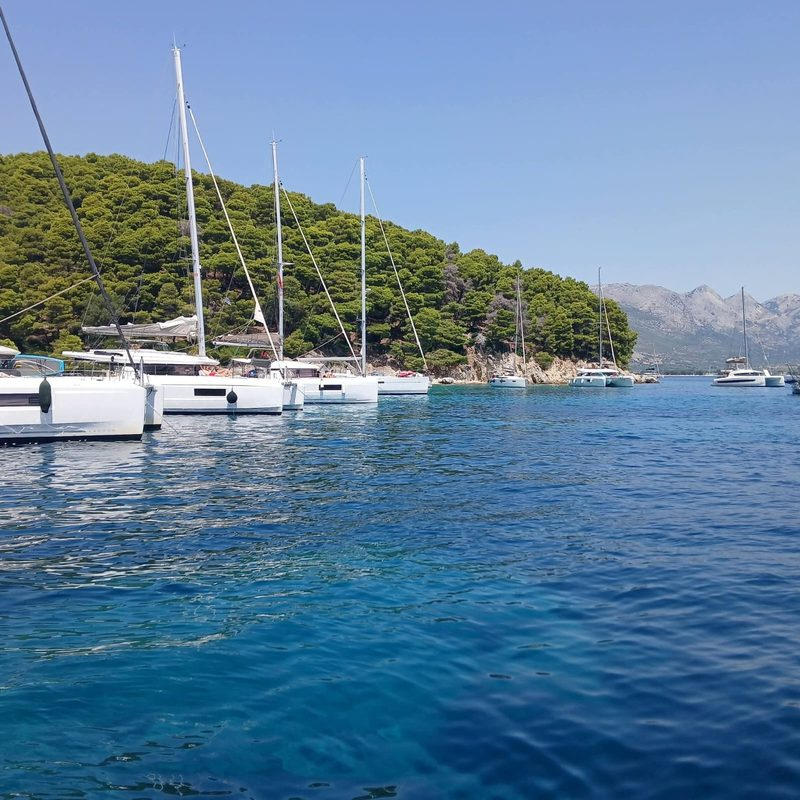

Chartering
Depending on your budget, the number of guests, and the destination you wish to explore, we guide you toward the yacht that truly suits your needs.
Our offering always includes multiple options — from more affordable, classic yachts to modern, premium vessels — so you can choose the level of comfort and style that fits your trip.
See the fleet